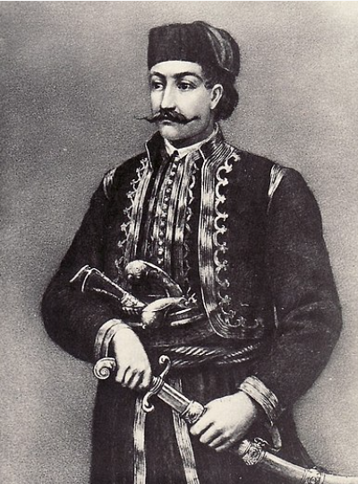

3 Hajduk Veljko i ÄarapiÄ Vasa
Haïdouk Velko et Vasa Tcharapitch
(Šesta Rukovet - 6ème guirlande : 03:04,5 - 03:35,5 )


Vasilije (Vasa) ÄarapiÄ (1770-1806)
"Chansons nationales des Slaves du Sud" du Croate Franje KuhaÄ
(On n'avait pas encore inventé le mot "Yougoslave" en1881)
Version Mokranjac, 6ème Guirlande, 3 |
Interprêté par Slobodan StankoviiÄ |
Chant patriotique moderne |
NOTES
|
Vasa ÄarapicÌ (1770-1806) uÄestvovao je u buni KoÄanske krajine (1788) zatim se borio protiv Turaka u austrijskoj vojsci. Postao je knez nahije GroÄke (predgraÄa Beograda). 1804. godine, kada su JaniÄari organizovali seÄu Knezovu, sklonio se na planinu Avalu. Postao je hajduk i pridružio se KaraÄorÄu. Poginuo je 29. novembra 1806. g. u borbama za osloboÄenje Beograda. Prva Negotinska bitka odigrala se 1804. Pesma âMula PaÅ¡aâ u 3. strofi ukazuje da Hajduk Velko ima snage 3 nahije (ukljuÄujucÌi i GroÄku nahiju). Moderna patiotiÄka pesma (kolo) nosi i naslov âHajduk Veljkoâ. Evo stihova: Ko to vranca konja jaÅ¡e, ko to britku sablju paÅ¡e, handžar hvata s obe ruke, tera Turke na buljuke? Refren:To je srpski junak bio, gore zelene, Hajduk Veljko, hrabri voÄa cele Krajine. Ko to rujno vino pije, ko to ljutu bitku bije, srpske pesme glasno peva, iz oka mu oganj seva? Ko ostavi srpskom rodu veÄnu slavu i slobodu, za Srbiju hrabro pade," za Krajinu glavu dade"? |
Vasa ÄarapiÄ (1770-1806) participa à la rébellion de la Krajina de KoÄa (1788) puis combattit les Turcs dans l'armée autrichienne. Il devint prince (knez) du district (nahiya) de GroÄka (banlieue de Belgrade). En 1804, quand les Janissaires organisèrent le massacre des Princes (seÄa Knezova), il se réfugia sur le mont Avala. Il devint un haïdouk et se joignit à Karageorges. Il mourut le 29 novembre 1806 lors des combats pour la libération de Belgrade. La première bataille de Négotine eut lieu en 1804. Le chant "Mula PaÅ¡a" indique dans la 3ème strophe que Haïdouk Velko dispose des forces de 3 nahiye (dont GroÄka). Une chanson patriotique moderne (kolo) porte aussi le titre de "Hajduk Veljko". En voici les paroles: Qui chevauche un cheval noir? Qui a un sabre bien affilé? Qui brandit le handjar à deux mains? Qui met les Turcs en fuite? Refrain: C'ést le héros serbe de la verte montagne, Le haïdouk Velko, le chef hardi de toute la Kraïna! Qui boit du vin écarlate, qui aime bien l'eau de vie? Qui chante des chants serbes à tue-tête?Qui a des yeux étincelants? Qui lègua à la race serbe gloire éternelle rt liberté? Qui pour la Serbie avec courage mourut et "donna sa tête plutôt que la Krajna"? |